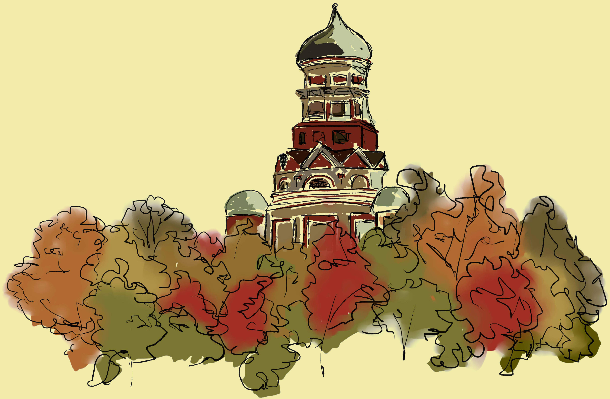

 ХРАМ УСЕКНОВЕНИЯ ГЛАВЫ ИОАННА ПРЕДТЕЧИ В КОЛОМЕНСКОМ СООРУЖЕН В 1547 Г. ПО УКАЗУ ЦАРЯ ИВАНА ГРОЗНОГО В СВЯЗИ С ВЕНЧАНИЕМ ЕГО НА ЦАРСТВО, А ТАКЖЕ КАК МОЛЕНИЕ О ДАРОВАНИИ НАСЛЕДНИКА. МНОГИЕ ДРЕВНИЕ РУКОПИСИ УКАЗЫВАЮТ, ЧТО ЗОДЧИМИ БЫЛИ БАРМА И ПОСТНИК, СОЗДАТЕЛИ УНИКАЛЬНОГО ХРАМА ВАСИЛИЯ БЛАЖЕННОГО НА КРАСНОЙ ПЛОЩАДИ. ДЬЯКОВСКАЯ ЦЕРКОВЬ В НЕКОТОРЫХ СВОИХ ЧЕРТАХ ПРЕДВОСХИЩАЕТ СОБОР ВАСИЛИЯ БЛАЖЕННОГО И ПО УБЕЖДЕНИЮ ИСТОРИКОВ ЗОДЧИЕ СМОТРЕЛИ НА НЕЕ КАК НА ИДЕЮ, КОТОРУЮ ОНИ РАЗВИЛИ И УСЛОЖНИЛИ В СВОЕМ БУДУЩЕМ ПРОЕКТЕ. ХРАМ СОСТОИТ ИЗ ПЯТИ ВОСЬМИГРАННЫХ БАШЕН, ИМЕЮЩИХ ОТДЕЛЬНЫЕ ВХОДЫ И АЛТАРИ, СОЕДИНЕННЫЕ ОБЩЕЙ ГАЛЕРЕЕЙ. НА ЗАПАДНОМ ФАСАДЕ МЕЖДУ ДВУМЯ СТОЛПАМИ РАСПОЛАГАЕТСЯ МНОГОПРОЛЕТНАЯ ЗВОННИЦА ПСКОВСКОГО ТИПА.
ЦЕРКОВЬ ЭФФЕКТНО ПОСТАВЛЕНА НА ВЫСОКОМ, КРУТОМ БЕРЕГУ МОСКВЫ-РЕКИ, УКРАШАЯ И ДОПОЛНЯЯ ПАНОРАМУ КОЛОМЕНСКОГО. ПРИ БЛИЖАЙШЕМ РАССМОТРЕНИИ ЦЕРКОВЬ ПОРАЖАЕТ СВОИМИ РАЗМЕРАМИ. НЕ МНОГИЕ ЦАРСКИЕ УСАДЬБЫ МОГУТ ПОХВАСТАТЬСЯ НАЛИЧИЕМ СРАЗУ ДВУХ ГРАНДИОЗНЫХ ХРАМОВ. А РАЗМЕРЫ ПРЕДТЕЧЕНСКОЙ ЦЕРКВИ ДЕЙСТВИТЕЛЬНО ВНУШИТЕЛЬНЫЕ: ОНА СОСТОИТ ИЗ ЦЕНТРАЛЬНОГО ВОСЬМИГРАННОГО СТОЛПА ВЫСОТОЙ 34 МЕТРА И ПРИМЫКАЮЩИХ К НЕМУ ЧЕТЫРЕХ ВОСЬМИГРАННЫХ БАШНЕОБРАЗНЫХ ПРИДЕЛОВ, ВОЗВЫШАЮЩИХСЯ НА 17 МЕТРОВ. ВСЯ ЭТА АРХИТЕКТУРНАЯ КОМПОЗИЦИЯ СТОИТ НА ЕДИНОМ ФУНДАМЕНТЕ И СОЕДИНЕНА КРЫТОЙ ОБХОДНОЙ ГАЛЕРЕЕЙ. ЦЕРКОВЬ КИРПИЧНАЯ, НО СТЕНЫ ЕЕ ОТШТУКАТУРЕНЫ И ПОБЕЛЕНЫ.
ЕСЛИ ПРЕДСТАВИТЬ НА МЕСТЕ ЦЕНТРАЛЬНОГО, СЛЕГКА «ПРИПЛЮСНУТОГО» КУПОЛА ДРУГОЙ, РЕЗНУЮ «МАКОВКУ», ТО ДАЖЕ У НЕСПЕЦИАЛИСТА ДОЛЖНЫ ВОЗНИКНУТЬ ПЕРВЫЕ АССОЦИАЦИИ С ЧЕМ-ТО ОЧЕНЬ ЗНАКОМЫМ. НЕ БУДЕМ ТОМИТЬ: СЧИТАЕТСЯ, ЧТО ЦЕРКОВЬ ИОАННА ПРЕДТЕЧИ В ДЬЯКОВЕ — ПРОТОТИП ГЛАВНОГО СИМВОЛЫ МОСКВЫ И РОССИИ, СОБОРА ПОКРОВА НА РВУ, БОЛЕЕ ИЗВЕСТНОГО КАК ХРАМ ВАСИЛИЯ БЛАЖЕННОГО.
СВЯЗЬ МЕЖДУ ХРАМАМИ В ДЬЯКОВО И НА КРАСНОЙ ПЛОЩАДИ ПРОВЕЛИ ИСКУССТВОВЕДЫ И ИСТОРИКИ АРХИТЕКТУРЫ: ПИСЬМЕННЫХ ПОДТВЕРЖДЕНИЙ ПРЕЕМСТВЕННОСТИ СОБОРОВ НЕТ. ЗАТО ЕСТЬ «ФИЗИЧЕСКИЕ» ДОКАЗАТЕЛЬСТВА: В ОДНОМ ВРЕМЕННОМ ПЕРИОДЕ БЫЛИ ПОСТРОЕНЫ 3 ЦЕРКВИ, СХОДНЫЕ ПО НЕОБЫЧНОМУ АРХИТЕКТУРНОМУ РЕШЕНИЮ, ПО ФОРМЕ, ПО ИСПОЛЬЗОВАННЫМ ПРИЕМАМ И МАТЕРИАЛАМ. ПО ОТНОШЕНИЮ К РУССКОЙ ТРАДИЦИИ ЗОДЧЕСТВА АРХИТЕКТУРА ВСЕХ ТРЕХ ПАМЯТНИКОВ ОЧЕНЬ ЭКЗОТИЧНА. ДВЕ ИЗ ТРЕХ ЦЕРКВЕЙ ИЗВЕСТНЫ И СОХРАНИЛИСЬ, А ТРЕТЬЯ, БОРИСОГЛЕБСКАЯ В СТАРИЦЕ, БЫЛА РАЗОБРАНА ЗА ВЕТХОСТЬЮ В 1803 ГОДУ, НО ПЕРЕД СЛОМОМ ЕЕ ОБМЕРИЛИ И СНЯЛИ ЧЕРТЕЖИ, ЧТО И ПОЗВОЛЯЕТ СЕГОДНЯ СУДИТЬ О ЕЕ ВНЕШНЕМ ВИДЕ И ДРУГИХ ДОСТОИНСТВАХ.
ДЕРЕВЯННАЯ ЦЕРКОВЬ УСЕКНОВЕНИЯ ГЛАВЫ ИОАННА ПРЕДТЕЧИ В ВАГАНЬКОВО ПОГИБЛА В ВЕЛИКИЙ МОСКОВСКИЙ ПОЖАР 1547 ГОДА, СЛУЧИВШИЙСЯ ВСКОРЕ ПОСЛЕ ВЕНЧАНИЯ ИВАНА (ГРОЗНОГО) НА ЦАРСТВО. ТОГДА СГОРЕЛА ВСЯ МОСКВА И ЦАРСКИЙ ДВОР. МОЛОДОМУ ЦАРЮ ПРЕДСТОЯЛО ВОССТАНОВИТЬ ЦЕРКОВЬ, НА ЭТОТ РАЗ УЖЕ В КАМНЕ. ОСТАВАЛОСЬ ВЫБРАТЬ МЕСТО.
ПЛОТНОСТЬ НАСЕЛЕНИЯ И ЗАСТРОЙКИ В МОСКВЕ УЖЕ В XVI ВЕКЕ БЫЛА ЧУДОВИЩНОЙ. ВОССТАНАВЛИВАТЬ ЦЕРКОВЬ УСЕКНОВЕНИЯ ГЛАВЫ СЛЕДОВАЛО НА СТАРОМ МЕСТЕ, ОДНАКО МЕСТО ЭТО БЫЛО МАЛО И ТЕСНО, А НОВЫЙ ТИТУЛ ДАВАЛ ЦАРЮ ПРАВО ПОСТРОИТЬ ЦЕРКОВЬ В ЧЕСТЬ СВОЕГО АНГЕЛА С ОСОБОЙ РОСКОШЬЮ И РАЗМАХОМ. ОСТАВАЛАСЬ ЛУЧШАЯ И БЛИЖАЙШАЯ ИЗ ПОДМОСКОВНЫХ ЦАРСКИХ РЕЗИДЕНЦИЙ — КОЛОМЕНСКОЕ.
ПЕРЕНОС ЦЕРКВИ НА СВОБОДНОЕ МЕСТО, НА ВЫСОКИЙ БЕРЕГ МОСКВЫ-РЕКИ ПОЗВОЛИЛ ЗОДЧИМ, КОТОРЫМ БЫЛА ЗАКАЗАНА ПОСТРОЙКА, ИЗМЕНИТЬ КАК МАСШТАБ, ТАК И АРХИТЕКТУРУ СООРУЖЕНИЯ. ИМЕНА СТРОИТЕЛЕЙ ЦЕРКВИ НЕИЗВЕСТНЫ, ХОТЯ ВСЕ ИССЛЕДОВАТЕЛИ ДАВНО СХОДЯТСЯ НА ТОМ, ЧТО ЭТО БЫЛИ РУССКИЕ ЗОДЧИЕ.
ТАК ЧТО ОДНОЗНАЧНО МОЖНО УТВЕРЖДАТЬ ЛИШЬ ТО, ЧТО ПРЕДТЕЧЕНСКАЯ ЦЕРКОВЬ БЫЛА ПОСТРОЕНА В СЕРЕДИНЕ XVI ВЕКА И, С БОЛЬШОЙ ДОЛЕЙ ВЕРОЯТНОСТИ, ДО ПОСТРОЙКИ САМОГО ЗНАМЕНИТОГО СООРУЖЕНИЯ ЭПОХИ ИВАНА ГРОЗНОГО: ПОКРОВСКОГО СОБОРА НА РВУ, НА КРАСНОЙ ПЛОЩАДИ.
ДЛЯ ПОСЕТИТЕЛЕЙ, НАВЕРНОЕ, НЕ ТАК ВАЖНО, В КАКОМ ИМЕННО ГОДУ БЫЛА ПОСТРОЕНА ПРЕДТЕЧЕНСКАЯ ЦЕРКОВЬ В ДЬЯКОВЕ. В ЛЮБОМ СЛУЧАЕ ЦЕРКОВЬ XVI ВЕКА — УЖЕ НЕСОМНЕННАЯ ДРЕВНОСТЬ.ЦЕРКОВЬ ЗАКРЫЛИ В 1924 Г., ОНА ДОЛГОЕ ВРЕМЯ ОСТАВАЛАСЬ ЗАБРОШЕННОЙ, ЗАТЕМ ЕЕ ПРИСПОСОБИЛИ ПОД КОЛХОЗНЫЙ СКЛАД. В ХОДЕ РЕСТАВРАЦИОННЫХ РАБОТ, КОТОРЫЕ НЕСКОЛЬКО РАЗ ПРОВОДИЛИСЬ В XX ВЕКЕ, ХРАМ БЫЛ ВОССТАНОВЛЕН В СВОЕМ ПЕРВОНАЧАЛЬНОМ ОБЛИКЕ. ЦЕРКОВЬ РЕСТАВРИРОВАЛИ В 1964 И 1990-Е ГГ.
БОГОСЛУЖЕНИЯ ВОЗОБНОВИЛИСЬ 10 СЕНТЯБРЯ 1992 Г. И ПРОХОДЯТ РЕГУЛЯРНО ПО РАСПИСАНИЮ